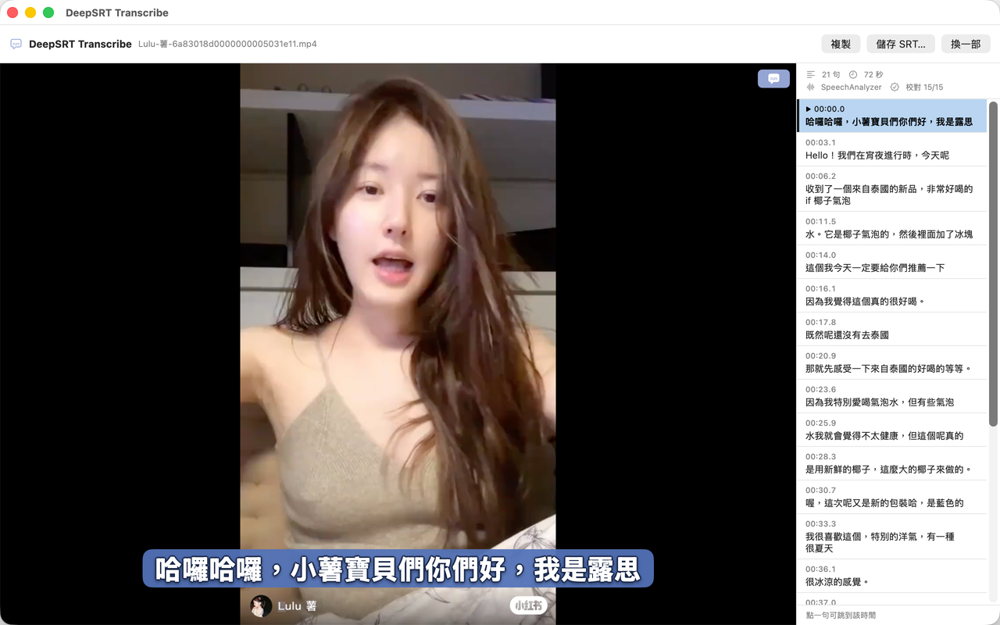

DeepSRT Transcribe
拖一段影片進來，得到一份台灣繁中 SRT 字幕。
Apple 語音模型完全本地運算，影像聲音全部離線處理 — 6 分鐘影片只要 10 秒 — 再由最強 Gemini 模型優化語言，Ground with Google Search 自動校正。
macOS 26+
Apple Silicon & Intel
音訊只在本機處理
拖一段影片進來，得到一份台灣繁中 SRT 字幕。
Apple 語音模型完全本地運算，影像聲音全部離線處理 — 6 分鐘影片只要 10 秒 — 再由最強 Gemini 模型優化語言，Ground with Google Search 自動校正。

拖進來之後就不用再做什麼——但每一步都看得到在做什麼。
AVFoundation 直接解碼，不需要安裝 ffmpeg。mp4 / mov / m4v / 音訊檔都可以。
用 macOS 26 的 SpeechAnalyzer，在你的 Mac 上跑完。音訊不會上傳到任何地方。 實測 5.5 分鐘的影片：辨識 3 秒，加上繁中校對總共 6.5 秒。
斷點一律問系統的中文分詞器，所以「高級」「專注力」不會被拆到兩行。
自備 Gemini 金鑰，負責簡→繁、修正同音錯字、補標點。可以開啟 Google 搜尋查證專有名詞。
+ / −）、位置（拖曳）、寬度、底色與透明度、背景樣式都能調。你的影片留在你的 Mac 上。音訊的解碼與語音辨識完全在本機完成，不會上傳。 只有在你自己填入 Gemini 金鑰、啟用繁中校對時，才會把字幕文字送去 Google 的 API—— 永遠不含時間碼、不含音訊、不含影片。詳情見 隱私權政策。
Mac App Store 審核中。上架後這裡會放下載連結。